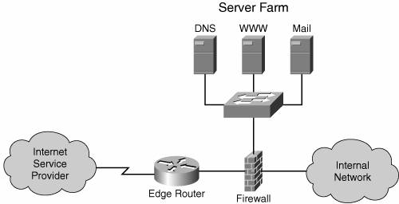

Chapter 9. Securing IPv6 NetworksIt is regularly stated that IPv6 is more secure than IPv4. In fact, this argument is often used to promote the deployment of IPv6. The assertion stems from the original mandated use of IPsec in host-to-host communication, as specified in RFC 2401. It is a natural requirement in the context of IPv6's intent to provide a new infrastructure that supports peer-to-peer applications. If this mandate would be enforced by all hosts, properly implemented by all applications, and a reliable and efficient key-exchange system would be universally adopted, it would mean a more secure data transport. The consistent use of IPsec on host-to-host communication would also enable network operators to track sources of attacks. Nevertheless, it would not prevent application layer security threats, which are common. Note RFC 2401's requirement to use IPsec on all hosts might limit IPv6 adoption for certain communication devices. Mobile phones, for example, might not have the capability to implement IPsec. To stimulate the adoption of IPv6 by the third generation of mobile systems, the IPsec requirement might become optional in the future. At this time, however, the conditions for a consistent use of end-to-end security are not in place; so for the most part, IPv6 is neither more nor less secure than IPv4. Both protocols face most of the same threats. IPv6 specificities bring new perspectives on some types of attacks. These specificities along with protocol security enhancements intrinsically close the door for some threats, although open new doors for others. Moreover, the likely coexistence of the two versions of IP can potentially offer attackers new venues to exploit security holes and to circumvent the defenses of one protocol to attack the other. This chapter reviews the security threats faced by an IPv6 infrastructure and its users. It draws a parallel to IPv4, highlighting differences and similarities. The review is based on an exhaustive study of this topic by Sean Convery and Darrin Miller in the white paper, "IPv6 and IPv4 Threat Comparison and Best-Practice Evaluation." Table 9-1 summarizes the topics covered later in this chapter.
The analysis of the security threats is complemented with a set of best practices rules that apply in each case presented. The security tools available for IPv6 in Cisco devices are also discussed in this chapter. Note The best practices recommended should be viewed in the light of the fact that at the time of this writing there is limited experience operating IPv6 networks. Before tackling IPv6 security, it is important to discuss the typical IPv4 topology to implement perimeter security. On one hand, this discussion would help choose the best way to integrate IPv6 in the existent networks without weakening deployed security measures. On the other hand, because of the similarities between the two protocols, it is likely that the same concepts will be used to secure IPv6 networks, too. Figure 9-1 shows the typical topology used in deploying perimeter security for IPv4 networks. You can add dedicated devices such as intrusion detection systems (IDSs) to this topology if the functionality is not supported by the same device that acts as a firewall. Additional levels of security are most likely implemented at the host level, particularly for important devices and resources. Figure 9-1. Typical IPv4 Perimeter Security Topology This figure shows is a common approach to securing networks, but this setup relies on fact that its perimeter can be clearly identified. Many books are available for more in-depth information about IPv4 security such as Sean Convery's Network Security Architectures. | |||||||||||||||||||||||||||||||||||||||||||||||||||||||||